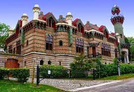

Gaudi

Construit entre 1883 et 1885 à Comillas, Espagne, El Capricho est une création exceptionnelle de l'architecte catalan Antoni Gaudí. Commandé par Máximo Díaz de Quijano, cet édifice représente une fantaisie architecturale avec des éléments de style oriental et mauresque. Les formes organiques, les carreaux de céramique, et les détails floraux caractérisent cette œuvre unique. La tour, inspirée par les minarets, est l'un des éléments les plus distinctifs. Bien que plus modeste que certaines créations ultérieures de Gaudí, El Capricho offre un aperçu précoce de son génie créatif et de son amour pour l'innovation architecturale.
